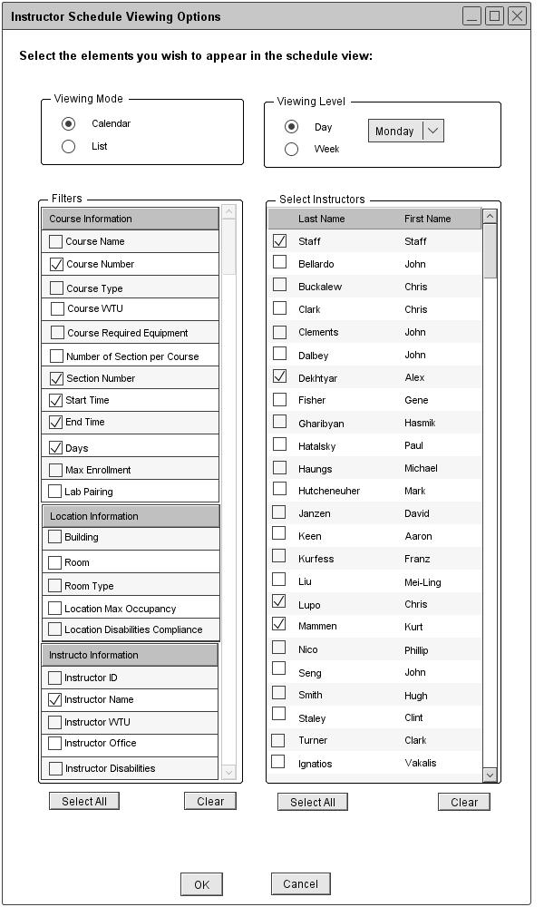
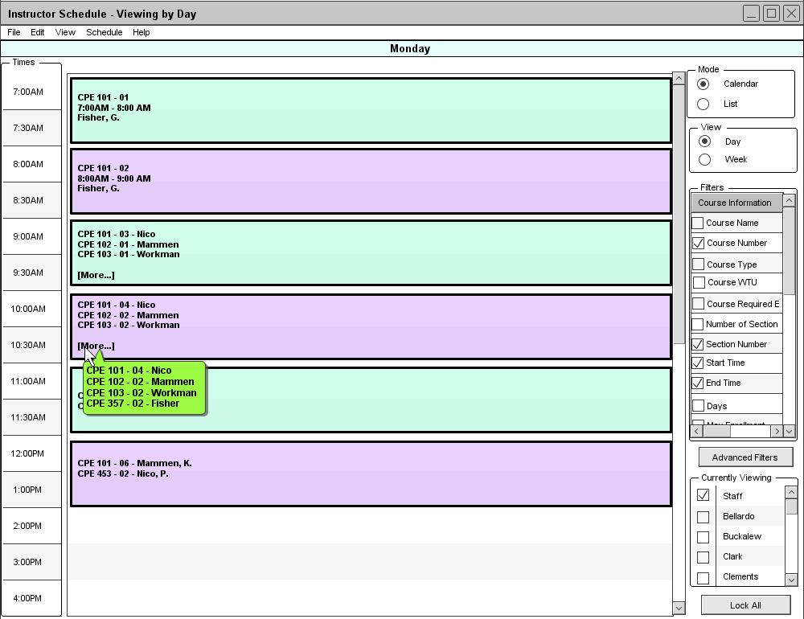

The Scheduler Tool displays a daily instructor schedule for the selected day of the week. Figure 81 is a filled in version of figure 69.

Figure 81: Viewing an instructor schedule in the calendar mode
From the user's selections in figure 81, the Schedule Tool displays a daily instructor schedule view in the calendar mode as shown in figure 82.

Figure 82: Calendar Mode of Daily Instructor Schedule
The Course Number, Section Number, Start Time, End Time and Instructor Name filter options are automatically selected and displayed on the schedule. When viewing a daily instructor schedule in the list mode, the data is sorted by instructor's name and then start time by default. The daily instructor schedule view is very similar to the daily course schedule view